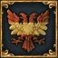

| 伊比利亞 |
| 法蘭西 |
| 低地 |
| 不列顛 |
| 北歐及波羅的 |
| 中歐 |
| 北德意志 |
| 南德意志 |
| 義大利 |
| 巴爾幹及安納托利亞 |
| 東歐 |
| 西班牙 | |
| 政府等級 | |
| 主流文化 | 卡斯提亞（伊比利亞） |
| 首都 | |
| 政體 | |
| 國教 | |
| 科技組 | |
| 西班牙的理念 |
此信息可能已落後版本，最後更新於1.35 ----
|
| +15% 陸軍士氣 +1 炮兵火力 |
| +5% 訓練度
|
|
|
| 「 | 」 |
西班牙（英文：Spain，西班牙文：España）是一個可成立國家，能被伊比利亞文化組的國家成立。
腳本代碼位於：/Europa Universalis IV/decisions/SpanishNation.txt。
 西班牙可以通過軍事手段或者外交手段成立。不論通過哪種手段，成立西班牙都要求國家的
西班牙可以通過軍事手段或者外交手段成立。不論通過哪種手段，成立西班牙都要求國家的  行政科技至少為 10 級，而且穆斯林國家已被驅逐出了伊比利亞——即目前所有伊比利亞區域的省份都不由穆斯林宗教組的國家擁有。
行政科技至少為 10 級，而且穆斯林國家已被驅逐出了伊比利亞——即目前所有伊比利亞區域的省份都不由穆斯林宗教組的國家擁有。
軍事成立西班牙需要擁有並造核若干個重要的省份，對所有符合條件的國家可用；儘管如此，AI控制的  葡萄牙不會通過（以軍事手段）成立西班牙的決議。
葡萄牙不會通過（以軍事手段）成立西班牙的決議。
外交成立西班牙的決議則只對  卡斯提亞和
卡斯提亞和  亞拉岡可用——如果其中一方是另一方的附庸國，那麼主導方可以通過外交手段成立西班牙。
亞拉岡可用——如果其中一方是另一方的附庸國，那麼主導方可以通過外交手段成立西班牙。
|
|
這條信息可能已不適合當前版本，最後更新於1.35。 |
在新大陸的全面擴張以及殖民地的大量建立使得西班牙成為了當時最強大也最富有的國家之一。西班牙的探險者們不懈地探索著未知的地域，擴展著我們的疆界。無數的黃金白銀被運回祖國，填滿了國庫。
潛在需求
|
接受 |
效果
| |
AI決議因子：

|
|
這條信息可能已不適合當前版本，最後更新於1.35。 |
在新大陸的全面擴張以及殖民地的大量建立使得西班牙成為了當時最強大也最富有的國家之一。西班牙的探險者們不懈地探索著未知的地域，擴展著我們的疆界。無數的黃金白銀被運回祖國，填滿了國庫。
潛在需求
|
接受 |
| 效果 | |
AI決議因子：
當DLC 霸業啟用時，西班牙使用新版的霸業任務，與卡斯提亞共用。
霸業啟用時，西班牙使用新版的霸業任務，與卡斯提亞共用。
當DLC 霸業未啟用而DLC
霸業未啟用而DLC 黃金世紀啟用時，西班牙將使用黃金世紀任務；除了在半島的擴張和對新大陸的殖民之外，還給予了它更多鞏固歐洲霸主地位的任務，其中包括了對
黃金世紀啟用時，西班牙將使用黃金世紀任務；除了在半島的擴張和對新大陸的殖民之外，還給予了它更多鞏固歐洲霸主地位的任務，其中包括了對  英格蘭、
英格蘭、 奧地利等的野心。
奧地利等的野心。
當DLC 霸業未啟用而DLC
霸業未啟用而DLC 黃金世紀啟用時，
黃金世紀啟用時， 亞拉岡、
亞拉岡、 加泰隆尼亞、
加泰隆尼亞、 瓦倫西亞、 馬略卡以及其他可能的
瓦倫西亞、 馬略卡以及其他可能的  主流文化為亞拉岡或加泰隆尼亞的國家通過軍事手段成立西班牙時，其獲得的任務樹是亞拉岡黃金世紀任務，而非西班牙黃金世紀任務。
主流文化為亞拉岡或加泰隆尼亞的國家通過軍事手段成立西班牙時，其獲得的任務樹是亞拉岡黃金世紀任務，而非西班牙黃金世紀任務。 亞拉岡外交成立西班牙時，也不會刷新任務樹。
亞拉岡外交成立西班牙時，也不會刷新任務樹。
當DLC 霸業啟用時，只有亞拉岡使用亞拉岡任務，並且成立西班牙依然沿用該任務；所有其他國家成立西班牙都會獲得西班牙任務。
霸業啟用時，只有亞拉岡使用亞拉岡任務，並且成立西班牙依然沿用該任務；所有其他國家成立西班牙都會獲得西班牙任務。
當兩個DLC均未開啟時，所有國家成立的西班牙均使用西班牙基礎任務。
西班牙有大量的歷史趣味事件，而其中許多也被  卡斯提亞共享。
卡斯提亞共享。
在1490年到1590年期間，如果西班牙和  法蘭西均在義大利地區控制至少一個省份，則兩國會觸發一個互相宣稱對方領土的事件，代表了歷史上的義大利戰爭。（譯註：歷史上，義大利戰爭的持續時間為1494年至1559年，主要參與方包括法國、西班牙等，有時也被稱為「哈布斯堡-瓦盧瓦戰爭」）。 這一事件將會惡化兩國之間的外交關係，還會增加戰爭爆發的機率。
法蘭西均在義大利地區控制至少一個省份，則兩國會觸發一個互相宣稱對方領土的事件，代表了歷史上的義大利戰爭。（譯註：歷史上，義大利戰爭的持續時間為1494年至1559年，主要參與方包括法國、西班牙等，有時也被稱為「哈布斯堡-瓦盧瓦戰爭」）。 這一事件將會惡化兩國之間的外交關係，還會增加戰爭爆發的機率。
在1550至1650這一百年中，如果卡斯提亞/西班牙與葡萄牙聯姻，且都不為附庸或被聯統，都信仰同一宗教，葡萄牙處於攝政議會的話，則會觸發一個事件。接受則會使葡萄牙被西班牙聯合統治。但這一事件發生的概率事實上很低。
在勃艮第繼承危機中，卡斯提亞/西班牙有可能獲得瓜分勃艮第遺產的機會（前提為擁有至少6個非殖民地省份）。
如果西班牙宣布破產，那麼則會觸發西班牙國家破產的事件。
|
|
這條信息可能已不適合當前版本，最後更新於1.35。 |
雖然不是王儲，但人們都認同年輕公主伊莎貝拉的才華和美德。作為強大的特拉斯塔瑪拉家族的女兒，她還通過聯姻獲得了強大的盟友以支持她宣稱王位。沒人能預測王國的未來，但即使是那些不滿於[Root.Monarch.GetName]統治的人，也承認伊莎貝拉作為[Root.Monarch.GetHerHis]繼承人的權利。
| 觸發條件 | 平均發生時間
200 月 |
王位應該是她的。
她的政治力量可以被用在其他地方。
| |
|
|
這條信息可能已不適合當前版本，最後更新於1.35。 |
出生於阿茲特克帝國和說瑪雅語言的尤卡坦半島邊界的拉·馬林切被她的家庭作為奴隸賣出，最終作為貢品被獻給我了我們。起初她只會說納瓦特爾語和一些瑪雅方言，卻不會說[Root.GetAdjective]語，在她的[Root.GetAdjective]語水平足夠她獨立翻譯前，我們需要通過一位會說[Root.GetAdjective]語和一點瑪雅語的翻譯才能與進行交流。拉·馬林切作為一個翻譯和西班牙征服的積極參與者，她的地位如此之高以至於在本地的記載中幾乎一直伴在西班牙征服者們的左右。許多征服者們都承認她對征服的重要性，不止一人認為她的貢獻僅次於天主本人。
觸發條件
|
平均發生時間
200 月 |
立即生效
| |
她將成為我們新一任的顧問！
讓她成為一名征服者
真是有趣！
| |
|
|
這條信息可能已不適合當前版本，最後更新於1.35。 |
被稱作「第十位繆斯」的胡安娜·伊內斯·德·拉·克魯茲是一位自學成才的學者、一位巴洛克風格的詩人和一位哲羅姆會修女。為了如她所希望的那樣盡情學習，她成為了一個修女，就如她所說的「不會有影響我學習自由的固定職業」。修道院的圖書館也隨著她對書籍和文學作品的收集而豐富起來。在她的信《回復菲羅提亞修女》中，她對女性受教育權利的辯護也為她招致了許多神職人員的注意和譴責。
觸發條件
|
平均發生時間
200 月 |
立即生效
| |
她聽起來像是一個我們宮廷急需的有智慧的女人。
她的作品將會在全國範圍內傳播！
| |
|
|
這條信息可能已不適合當前版本，最後更新於1.35。 |
出生於西班牙埃斯特雷馬杜拉省普拉森西亞的伊內絲·德·蘇亞雷斯前往南美來尋找她的丈夫，卻發現在她到達新大陸之前他就已經死了。她成為了佩德羅·德·巴爾迪維亞的遠征隊的一員，啟程為這篇新領地建立首都。蘇亞雷斯治療團隊中的病人和傷員，在沙漠中為他們尋找水源，並在當巴爾迪維亞的一個對手想要破壞他的團隊並把他殺死的時候救了他一命。他們將城市建在了一個水源豐富的肥沃山谷之中，但是山谷中仍有許多不認同這些殖民者的原住民。伊內絲·德·蘇亞雷斯帶領著市民們擊敗了土著的一次襲擊。穿戴著厚厚的甲冑，頭上帶著頭盔，肩上披著皮製披風的她騎著白馬集結著士兵們，並用豪言壯語激勵著他們。她親自帶領著這些戰士，最後將土著們徹底驅逐了出去。她的勇氣使得我們獲得了最後的勝利，要不是有她，這座城市恐怕就將淪陷，而殖民擴張也將受到阻撓。
觸發條件
|
平均發生時間
200 月 |
立即生效
| |
她的勇氣值得受到獎賞，任命她為顧問！
她是個真正的征服者！
她的勇氣是偉大將領的標誌！
| |
|
|
這條信息可能已不適合當前版本，最後更新於1.35。 |
「金花」阿娜卡奧娜因其所著的阿雷托——敘事曲與敘事詩——而聞名。她是一位泰諾族酋長，同時也是馬瓜納酋長卡奧納博的妻子。卡奧納博被指控組織襲擊了西班牙移民點，遭逮捕後在被運往西班牙途中死於海難。歐洲人的虐待引起了泰諾人的反抗，但阿娜卡奧娜始終保持著克制——直到他們在一場諸酋長為她舉辦的宴會上放了把火。歐洲人將在場的酋長們活活燒死，並逮捕了阿娜卡奧娜和她手下的貴族。他們被指控反抗占領並被處決，除了阿娜卡奧娜——他們告訴她只要願意當一位歐洲人的情婦，便可逃脫一死。就在她決定與族人共赴命運時，我軍擊潰了西班牙士兵，並解救了她和她的同伴們。
觸發條件
|
平均發生時間
200 月 |
立即生效
| |
讓她獲得自由，並任命她為我們的顧問
沒人會傷害她和她的同胞
| |
|
|
這條信息可能已不適合當前版本，最後更新於1.35。 |
長著一頭鮮艷的紅髮並有著與頭髮一般火烈的脾氣的海盜安妮·博尼與她的第二任丈夫，海盜船復仇號的船長傑克「花斑」雷克漢姆一同被捕了。博尼和雷克漢姆勇敢地抵抗著喬納森·巴內特的部隊，但因為他們的船員醉得太厲害而不得不投降被捕。雷克漢姆被絞死，但博尼以懷孕為由請求赦免，並最終獲釋。在兒子出生不就她便獲得了自由身。他們夫妻兩人在加勒比海域橫行了數月，登上較小的商船並將上面所有的財寶全部劫走。博尼與男人們並肩戰鬥，用她在戰鬥中所表現的能力與技巧贏得了船員們的尊敬。我們可以利用這個女人的能力，讓她成為一位海軍將領或者是顧問。
觸發條件
|
平均發生時間
200 月
|
立即生效
| |
那麼就是顧問了。
讓她成為海軍將領，但是也許我們需要找人看著她
| |
|
|
這條信息可能已不適合當前版本，最後更新於1.35。 |
海盜船復仇號的船長傑克「花斑」雷克漢姆舉辦一場朗姆酒派對時，海盜獵手喬納森·巴內特一輪齊射的攻擊之下瞬間使他們的戰艦崩潰了。此時船員們不是四處逃竄便是醉得無法戰鬥，只剩下瑪麗·瑞德和安妮·博尼來抵抗巴內特的部隊。他們最終被擊敗，船長雷克漢姆投降。這些海盜全部被捕，並因海盜罪名被判處絞刑。兩位女子則以腹中的孩子求情，使得她們在孩子出生前暫時被赦免。瑪麗·瑞德告訴了我們，在她加入雷克漢姆與博尼之前，她是一位船長遺孀的私生子。她的母親把她打扮成男孩，並給她起名他馬克，以便使她獲得死去哥哥的祖母的救濟。她少年時期曾當過一段時間的僕人，之後便開始了海員的生涯。這段時間，她仍然身著男裝，加入了英國軍隊並在戰鬥中證明了自己的能力。在與一名佛蘭德士兵墜入愛河之後，他們用軍餉和軍中朋友的禮物買了一家小旅館，而直到他們結婚時，這些朋友們才知道「馬克」原來其實是「瑪麗」。他的丈夫年紀輕輕就去世了，於是她便重新穿上男裝加入了軍隊，但當時沒有戰爭，她也沒有辦法得到提拔。在退伍之後，她在船上被海盜劫持，並被迫成為了他們的一員。在受到了國王的赦免並被派往私掠船上服役後，她與船員一起譁變並重回了海盜的本行。之後她便碰到了海盜船船長傑克「花斑」雷克漢姆和他的同伴安妮·博尼。
觸發條件
|
平均發生時間
200 月
|
立即生效
| |
真是可惜，等她生下孩子就要把她絞死。
赦免她，讓她成為我們的一位海軍將領。
| |

Forever Golden 永恆的黃金時代 完成西班牙任務樹。 |

Imperio español 西班牙帝國 作為西班牙，讓自己的殖民領擁有墨西哥、巴拿馬、哈瓦那和庫斯科。 |

Isn't this the way to India? 這不是去印度的路嗎？ 作為卡斯提亞或西班牙，發現美洲 |

Spain is the Emperor 西班牙是皇帝 作為西班牙，成為神聖羅馬帝國皇帝。 |

No Country for Old Tercios 老方陣無所依 作為西班牙，擁有改良大方陣、33個大方陣單位，並且同時控制3個列強的首都。 |
| 伊比利亞 |
| 法蘭西 |
| 低地 |
| 不列顛 |
| 北歐及波羅的 |
| 中歐 |
| 北德意志 |
| 南德意志 |
| 義大利 |
| 巴爾幹及安納托利亞 |
| 東歐 |
| 北非 |
| 東非 |
| 中非 |
| 東南非 |
| 西非 |
| 西南非 |
| 近東 |
| 波斯及中亞 |
| 北亞 |
| 東亞 |
| 東南亞 |
| 印度 |
| 中美洲 |
| 墨西哥 |
| 北美東北 |
| 北美東南 |
| 北美中西部 |
| 部落聯盟國家 |
| 前殖民領國家 | |
| 海盜共和國 |
| 南美北部 |
| 安第斯山區 |
| 南美東部 |
| 南美南部 |
| 前殖民領國家 |
| 澳大利亞 |
| 南太平洋 |
| 北太平洋 |
| 前殖民領國家 |